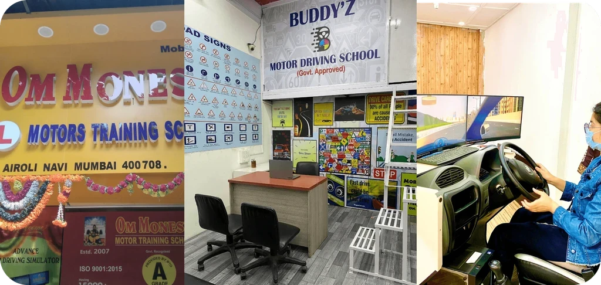
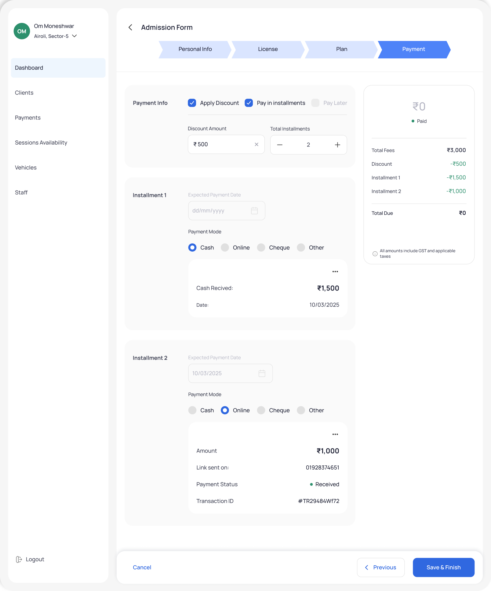

About 4 min read
Bridge
Turning manual driving-school operations into a connected digital product.
- Role
- Senior Product Designer (Solo Designer)
- Team
- 2 developers, client and founder
- Status
- Launched · Used by driving schools

00The 30-second version
- Problem
- Driving schools relied on paper registers, spreadsheets and WhatsApp to manage admissions, payments, student records and vehicle schedules. This made everyday operations manual and difficult to track.
- My role
- As the solo Senior Product Designer, I owned the product experience end to end, from research and MVP definition to information architecture, user flows, UI and design system.
- Key decision
- I connected the fragmented workflows into one platform, focusing on a simplified admissions journey, an action-oriented dashboard and automated operational reminders.
- Outcome
- Bridge launched and was adopted by multiple driving schools across Mumbai. The initial client reported saving several hours on manual payment tracking and student reminders.
The challenge
Driving schools relied on paper registers, spreadsheets and WhatsApp to manage their daily operations.
Context
Admissions, student records, payments, vehicle documents and driving schedules were maintained separately. Administrators had to manually update records, track outstanding fees, check document expiry dates and send reminders.
The opportunity
Bring these disconnected workflows into one system, reduce repetitive administrative work and make important operational information easier to act on.
Research & discovery
I visited the driving school and worked directly with the owner and administrators to understand how daily operations were managed.
How I gathered insights
On-site observation
Studied how admissions, payments, student records and vehicle information were maintained.
Document analysis
Collected existing forms and registers to understand the information and processes involved.
User journey mapping
Mapped key operational journeys, identifying friction points, task frequency and time-consuming activities.
Stakeholder discussions
Worked with the client and founder to understand requirements and validate priorities.

Defining the MVP
I used the MoSCoW prioritisation framework to separate essential workflows from features that could be introduced later. This helped align the MVP scope with the client’s immediate operational needs.
Key design decisions
Rather than digitising each register independently, I focused on connecting the workflows that administrators used every day.
Design decisions
| Design focus | What I designed | Why it mattered |
|---|---|---|
| Action-oriented dashboard | A central view of pending payments, students approaching driving tests, vehicle document expiries and simple branch-level trends. | Helped administrators identify what needed attention without checking multiple records. |
| Flexible admissions flow | A four-part admission journey with dynamic licence fields, KYC auto-fill, session availability and automatic fee calculation. | Reduced unnecessary data entry, improved information accuracy and made enrolment easier to complete. |
| Automated operations | Payment reminders, session notifications and vehicle document expiry alerts through scheduled alerts and WhatsApp. | Reduced repetitive follow-ups and the need to manually monitor dates and records. |
Designing the core experience
Dashboard
A dashboard built around action, not just analytics
The administrators didn’t need complex reports. They needed to know what required attention that day.
I prioritised operational signals such as outstanding payments, upcoming driving tests and expiring vehicle documents, alongside simple admission and sales trends.
The goal was to make the dashboard useful for everyday decisions, not just a place to view numbers.
Admissions
Admissions designed for accuracy and speed
The original admission process involved a lengthy form with fields that weren’t relevant to every applicant.
I restructured it into four clear sections:
- Personal details
- Licence details
- Driving plan
- Payment
The experience adapted to the selected licence type, supported KYC-based auto-fill, showed available vehicle and session slots, and calculated fees based on the selected plan.
This also helped reduce manual data entry errors in information used for licence-related documentation.


Automation
Replacing repetitive follow-ups with automation
Several recurring tasks depended on administrators remembering dates and manually contacting students.
I designed workflows that automated:
Payment reminders based on instalment due dates.
WhatsApp notifications 20 to 30 minutes before scheduled driving sessions.
Vehicle document expiry alerts at 7, 3 and 1 day before expiry.
The aim was to make routine follow-ups part of the product workflow instead of another task on the administrator’s checklist.
Designing connected operational workflows
Beyond admissions, I designed the core modules that helped administrators manage students, payments, vehicles and daily driving schedules from one platform.
Records
Student, payment and vehicle management
Designed structured record-management experiences to maintain student profiles, track payment history and outstanding balances, and manage vehicle details and document expiry dates.
Scheduling
Live driving schedule
Designed a scheduling experience that gave administrators visibility into vehicle availability and assigned driving sessions, helping prevent scheduling conflicts and coordinate daily operations.


Structure
Information architecture & user flows
Established the product’s information architecture and connected workflows across admissions, student records, payments, vehicles and scheduling. The goal was to make related information easy to find and everyday tasks easier to manage without switching between disconnected records.
Outcome
Bridge launched and became part of the initial client’s daily operations. Other driving schools across Mumbai, including Thane and Airoli, also adopted the product through client referrals and the agency’s sales efforts.
What changed for the client
Less manual follow-up
Payment and session reminders were automated instead of being sent individually by administrators.
Centralised payment tracking
Payment status and outstanding dues were visible in one place, replacing scattered registers and manual tracking.
Proactive vehicle management
Automated alerts helped administrators stay ahead of vehicle document expiries.
Better operational visibility
Administrators could manage daily activities through one connected platform instead of switching between disconnected records.
The client reported saving several hours on manual reminders and payment tracking. This was qualitative feedback, not a measured time-saving metric.
A note on the current product
The product’s visual direction has since evolved, but its core modules and workflows remain largely based on the original experience I designed. The current interface may therefore differ from the screens shown in this case study.